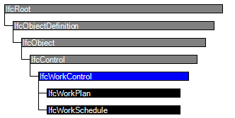

Natural language names
 | Arbeitskontrolle |
 | Work Control |
 | Contrôle des travaux |
| Arbeitskontrolle |
| Work Control |
| Contrôle des travaux |
An IfcWorkControl is an abstract supertype which captures information that is common to both IfcWorkPlan and IfcWorkSchedule.
HISTORY New entity in IFC2x
CHANGE IFC4 Corrected assignment of resources to work control in documentation. Assignment of tasks to work control updated based on changes of task time definitions and the introduction of a summary task. Identifier has been renamed (now Identification) and promoted to supertype IfcControl
A work control may have resources assigned to it. This is handled by the IfcRelAssignsToControl relationship. A work control should also define a context that gives further information about its usage. If no special context information is required then the IfcProject instance as a global context should be used instead. An explicit link between the work control and the IfcProject via IfcRelDeclares should then be provided.
The attribute IfcWorkControl.Purpose is used to define the purpose of either a work schedule or a work plan. In the case of IfcWorkPlan, the purpose attribute can be used to determine if the work plan is for cost estimating, task scheduling or some other defined purpose.
| # | Attribute | Type | Cardinality | Description | C |
|---|---|---|---|---|---|
| 7 | CreationDate | IfcDateTime | [1:1] | The date that the plan is created. | X |
| 8 | Creators | IfcPerson | S[1:?] | The authors of the work plan. | X |
| 9 | Purpose | IfcLabel | [0:1] | A description of the purpose of the work schedule. | X |
| 10 | Duration | IfcDuration | [0:1] | The total duration of the entire work schedule. | X |
| 11 | TotalFloat | IfcDuration | [0:1] | The total time float of the entire work schedule. | X |
| 12 | StartTime | IfcDateTime | [1:1] | The start time of the schedule. | X |
| 13 | FinishTime | IfcDateTime | [0:1] | The finish time of the schedule. | X |

| # | Attribute | Type | Cardinality | Description | C |
|---|---|---|---|---|---|
| IfcRoot | |||||
| 1 | GlobalId | IfcGloballyUniqueId | [1:1] | Assignment of a globally unique identifier within the entire software world. | X |
| 2 | OwnerHistory | IfcOwnerHistory | [0:1] |
Assignment of the information about the current ownership of that object, including owning actor, application, local identification and information captured about the recent changes of the object,
NOTE only the last modification in stored - either as addition, deletion or modification. | X |
| 3 | Name | IfcLabel | [0:1] | Optional name for use by the participating software systems or users. For some subtypes of IfcRoot the insertion of the Name attribute may be required. This would be enforced by a where rule. | X |
| 4 | Description | IfcText | [0:1] | Optional description, provided for exchanging informative comments. | X |
| IfcObjectDefinition | |||||
| HasAssignments | IfcRelAssigns @RelatedObjects | S[0:?] | Reference to the relationship objects, that assign (by an association relationship) other subtypes of IfcObject to this object instance. Examples are the association to products, processes, controls, resources or groups. | X | |
| Nests | IfcRelNests @RelatedObjects | S[0:1] | References to the decomposition relationship being a nesting. It determines that this object definition is a part within an ordered whole/part decomposition relationship. An object occurrence or type can only be part of a single decomposition (to allow hierarchical strutures only). | X | |
| IsNestedBy | IfcRelNests @RelatingObject | S[0:?] | References to the decomposition relationship being a nesting. It determines that this object definition is the whole within an ordered whole/part decomposition relationship. An object or object type can be nested by several other objects (occurrences or types). | X | |
| HasContext | IfcRelDeclares @RelatedDefinitions | S[0:1] | References to the context providing context information such as project unit or representation context. It should only be asserted for the uppermost non-spatial object. | X | |
| IsDecomposedBy | IfcRelAggregates @RelatingObject | S[0:?] | References to the decomposition relationship being an aggregation. It determines that this object definition is whole within an unordered whole/part decomposition relationship. An object definitions can be aggregated by several other objects (occurrences or parts). | X | |
| Decomposes | IfcRelAggregates @RelatedObjects | S[0:1] | References to the decomposition relationship being an aggregation. It determines that this object definition is a part within an unordered whole/part decomposition relationship. An object definitions can only be part of a single decomposition (to allow hierarchical strutures only). | X | |
| HasAssociations | IfcRelAssociates @RelatedObjects | S[0:?] | Reference to the relationship objects, that associates external references or other resource definitions to the object.. Examples are the association to library, documentation or classification. | X | |
| IfcObject | |||||
| 5 | ObjectType | IfcLabel | [0:1] |
The type denotes a particular type that indicates the object further. The use has to be established at the level of instantiable subtypes. In particular it holds the user defined type, if the enumeration of the attribute PredefinedType is set to USERDEFINED.
| X |
| IsDeclaredBy | IfcRelDefinesByObject @RelatedObjects | S[0:1] | Link to the relationship object pointing to the declaring object that provides the object definitions for this object occurrence. The declaring object has to be part of an object type decomposition. The associated IfcObject, or its subtypes, contains the specific information (as part of a type, or style, definition), that is common to all reflected instances of the declaring IfcObject, or its subtypes. | X | |
| Declares | IfcRelDefinesByObject @RelatingObject | S[0:?] | Link to the relationship object pointing to the reflected object(s) that receives the object definitions. The reflected object has to be part of an object occurrence decomposition. The associated IfcObject, or its subtypes, provides the specific information (as part of a type, or style, definition), that is common to all reflected instances of the declaring IfcObject, or its subtypes. | X | |
| IsTypedBy | IfcRelDefinesByType @RelatedObjects | S[0:1] | Set of relationships to the object type that provides the type definitions for this object occurrence. The then associated IfcTypeObject, or its subtypes, contains the specific information (or type, or style), that is common to all instances of IfcObject, or its subtypes, referring to the same type. | X | |
| IsDefinedBy | IfcRelDefinesByProperties @RelatedObjects | S[0:?] | Set of relationships to property set definitions attached to this object. Those statically or dynamically defined properties contain alphanumeric information content that further defines the object. | X | |
| IfcControl | |||||
| 6 | Identification | IfcIdentifier | [0:1] | An identifying designation given to a control It is the identifier at the occurrence level. | X |
| Controls | IfcRelAssignsToControl @RelatingControl | S[0:?] | Reference to the relationship that associates the control to the object(s) being controlled. | X | |
| IfcWorkControl | |||||
| 7 | CreationDate | IfcDateTime | [1:1] | The date that the plan is created. | X |
| 8 | Creators | IfcPerson | S[1:?] | The authors of the work plan. | X |
| 9 | Purpose | IfcLabel | [0:1] | A description of the purpose of the work schedule. | X |
| 10 | Duration | IfcDuration | [0:1] | The total duration of the entire work schedule. | X |
| 11 | TotalFloat | IfcDuration | [0:1] | The total time float of the entire work schedule. | X |
| 12 | StartTime | IfcDateTime | [1:1] | The start time of the schedule. | X |
| 13 | FinishTime | IfcDateTime | [0:1] | The finish time of the schedule. | X |
Property Sets for Objects
The Property Sets for Objects concept applies to this entity as shown in Table 17.
| ||||||||||||||||||
Table 17 — IfcWorkControl Property Sets for Objects |
Control Assignment
The Control Assignment concept applies to this entity.
From IFC4 onwards the assignment of tasks to the work control is handled by the IfcRelAssignsToControl relationship. IfcRelAssignsTasks as used in previous IFC releases has been deleted and can not be used any longer. Another change in IFC4 is that it is not necessary to assign each task to a work control as it is regarded to be sufficient if the summary task (root task in the task hierarchy defined through IfcRelNests relationships) is assigned to a work control.
| # | Concept | Model View |
|---|---|---|
| IfcRoot | ||
| Software Identity | Common Use Definitions | |
| Revision Control | Common Use Definitions | |
| IfcObject | ||
| Object Occurrence Predefined Type | Common Use Definitions | |
| IfcControl | ||
| IfcWorkControl | ||
| Property Sets for Objects | Common Use Definitions | |
| Control Assignment | Common Use Definitions | |
<xs:element name="IfcWorkControl" type="ifc:IfcWorkControl" abstract="true" substitutionGroup="ifc:IfcControl" nillable="true"/>
<xs:complexType name="IfcWorkControl" abstract="true">
<xs:complexContent>
<xs:extension base="ifc:IfcControl">
<xs:sequence>
<xs:element name="Creators" nillable="true" minOccurs="0">
<xs:complexType>
<xs:sequence>
<xs:element ref="ifc:IfcPerson" maxOccurs="unbounded"/>
</xs:sequence>
<xs:attribute ref="ifc:itemType" fixed="ifc:IfcPerson"/>
<xs:attribute ref="ifc:cType" fixed="set"/>
<xs:attribute ref="ifc:arraySize" use="optional"/>
</xs:complexType>
</xs:element>
</xs:sequence>
<xs:attribute name="CreationDate" type="ifc:IfcDateTime" use="optional"/>
<xs:attribute name="Purpose" type="ifc:IfcLabel" use="optional"/>
<xs:attribute name="Duration" type="ifc:IfcDuration" use="optional"/>
<xs:attribute name="TotalFloat" type="ifc:IfcDuration" use="optional"/>
<xs:attribute name="StartTime" type="ifc:IfcDateTime" use="optional"/>
<xs:attribute name="FinishTime" type="ifc:IfcDateTime" use="optional"/>
</xs:extension>
</xs:complexContent>
</xs:complexType>
ENTITY IfcWorkControl
ABSTRACT SUPERTYPE OF(ONEOF(IfcWorkPlan, IfcWorkSchedule))
SUBTYPE OF (IfcControl);
CreationDate : IfcDateTime;
Creators : OPTIONAL SET [1:?] OF IfcPerson;
Purpose : OPTIONAL IfcLabel;
Duration : OPTIONAL IfcDuration;
TotalFloat : OPTIONAL IfcDuration;
StartTime : IfcDateTime;
FinishTime : OPTIONAL IfcDateTime;
END_ENTITY;
 Instance diagram
Instance diagram Link to this page
Link to this page